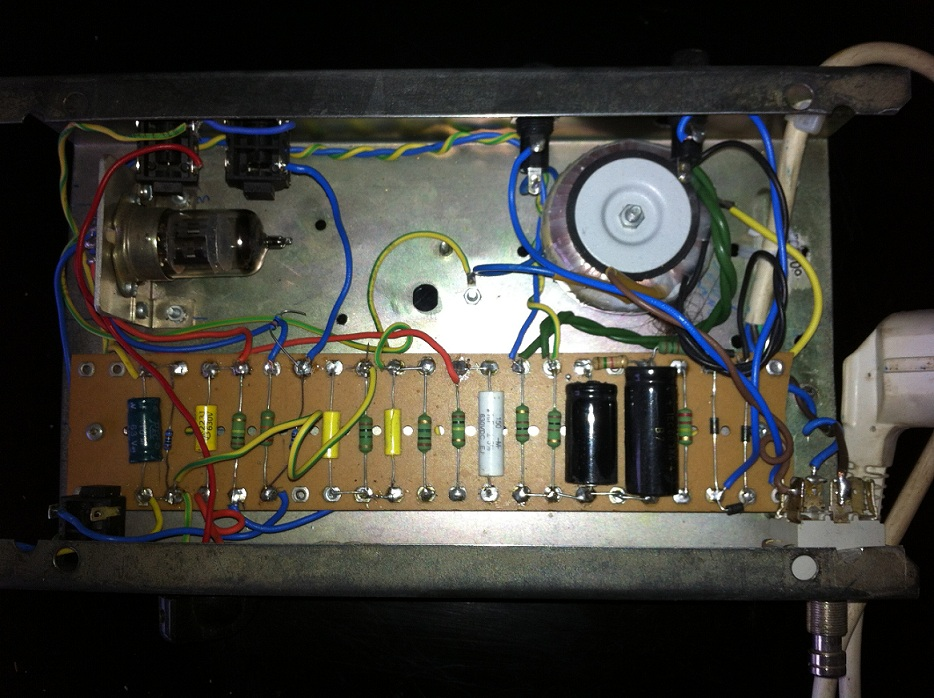

TUBE TREMOLO
 A project that has never seen its end. A tube tremolo. The thing is, I wanted to avoid at all cost the photo-resistor element and drive the gain factor of the tube directly from the LFO (cf. Electro harmonix wiggler). The test rig was a bit wacky (High voltage inside) and the result not that great (noise and distortion). I might go back to it later. On later versions I ended up using a vactrol, it was working but very limited